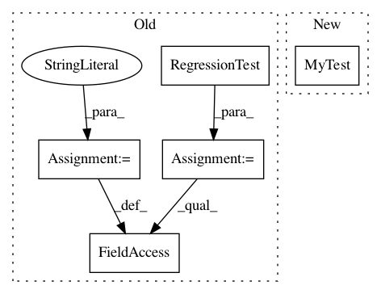

ac9081f85e0f54b0830b7f05593955a837eba7ce,unittests/test_pipeline.py,TestRegressionTest,test_sourcesdir_none,#TestRegressionTest#,276
Before Change
assert test.supports_environ("*")
def test_sourcesdir_none(self):
test = rfm.RegressionTest()
test._prefix = "unittests/resources/checks"
test.sourcesdir = None
test.valid_prog_environs = ["*"]
test.valid_systems = ["*"]
with pytest.raises(ReframeError):
After Change
self.valid_systems = ["*"]
with pytest.raises(ReframeError):
self._run_test(MyTest())
def test_sourcesdir_build_system(self):
@fixtures.custom_prefix("unittests/resources/checks")
In pattern: SUPERPATTERN
Frequency: 3
Non-data size: 5
Instances
Project Name: eth-cscs/reframe
Commit Name: ac9081f85e0f54b0830b7f05593955a837eba7ce
Time: 2020-02-25
Author: karakasis@cscs.ch
File Name: unittests/test_pipeline.py
Class Name: TestRegressionTest
Method Name: test_sourcesdir_none
Project Name: eth-cscs/reframe
Commit Name: ac9081f85e0f54b0830b7f05593955a837eba7ce
Time: 2020-02-25
Author: karakasis@cscs.ch
File Name: unittests/test_pipeline.py
Class Name: TestRegressionTest
Method Name: test_sourcesdir_build_system
Project Name: eth-cscs/reframe
Commit Name: ac9081f85e0f54b0830b7f05593955a837eba7ce
Time: 2020-02-25
Author: karakasis@cscs.ch
File Name: unittests/test_pipeline.py
Class Name: TestRegressionTest
Method Name: test_sourcesdir_none_generated_sources